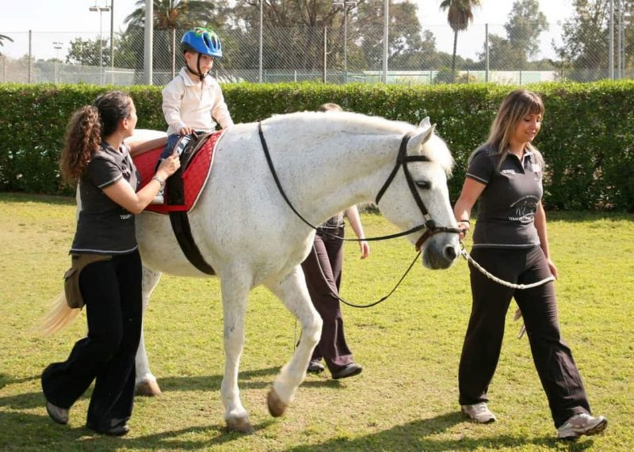

Somos una Institución sin fines de lucro que comenzó su actividad en 1978, siendo pionera en la Argentina y Latinoamérica.
Nuestro objetivo es brindar, a través de la Equinoterapia, a las personas con diferentes discapacidades la posibilidad utilizar el caballo como medio de rehabilitación, ofreciendo a través de profesionales de distintas disciplinas un ambiente de aprendizaje e integración social para el jinete discapacitado.
¡Te invitamos a conocernos!
